HIST 101 · Chapter 12 · Lecture 2
Reformers as Architects of the Human Soul
Lecture 2 — HIST 101: American History to 1865
"The reformation of criminals, not their punishment, should be the object of imprisonment."
— Reformers' Creed, 1820sCan institutions reshape human character and create a moral society?
Reformers believed they could design institutions that would redesign people.
The right environment, structure, and discipline can cure crime, madness, and ignorance.
Prisons, asylums, and schools became testing grounds for theories of human transformation.
Social perfection through institutional engineering.
Punishment was about:
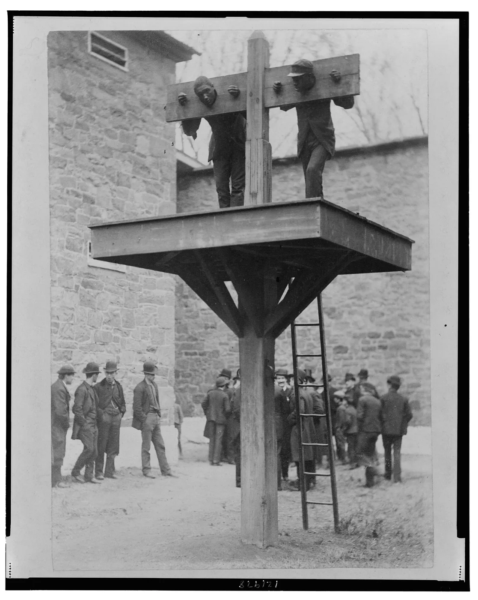
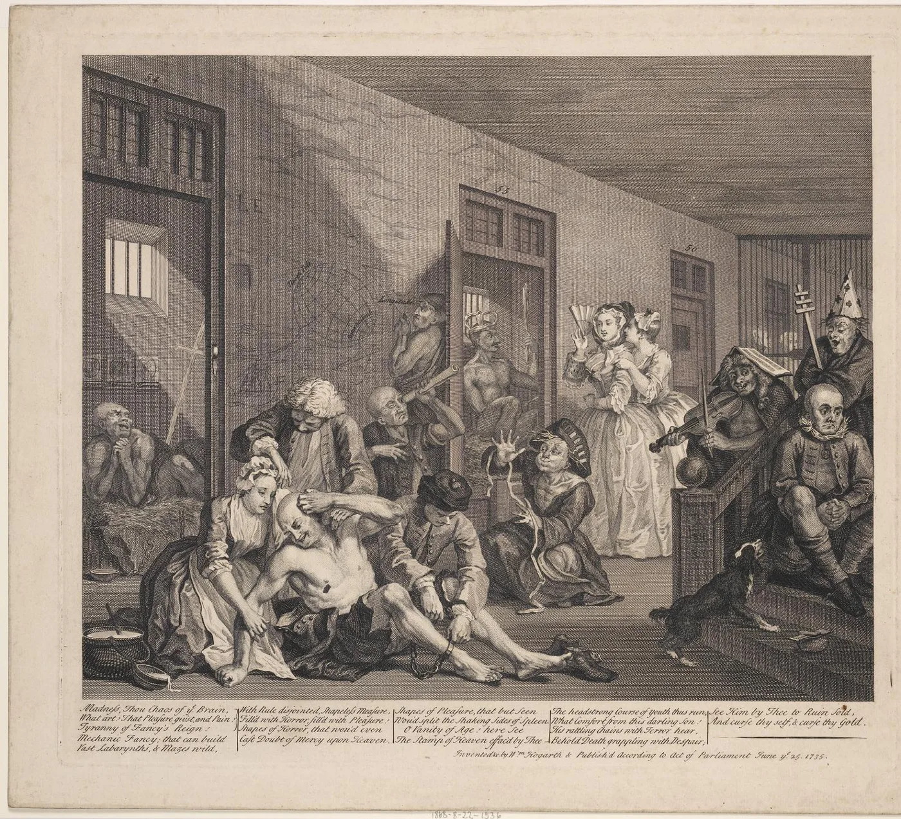
"Penitentiary" — from "penitence" — a place where criminals would reflect on their sins and emerge morally transformed
A perfectly designed prison system could:
Eastern State Penitentiary, Philadelphia (1829)
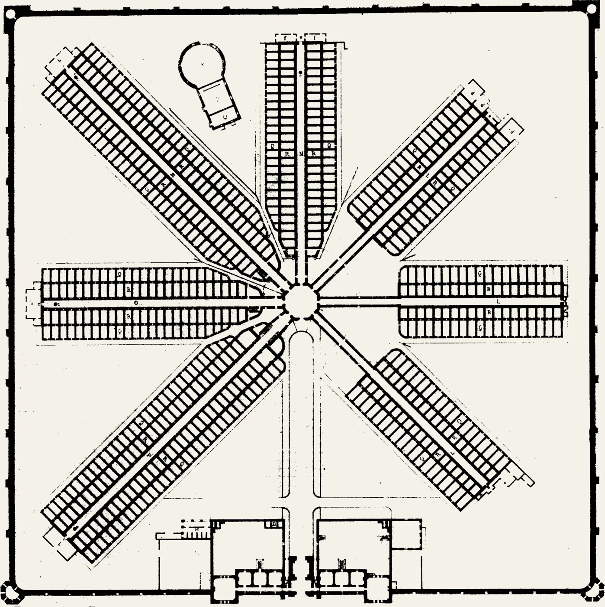
Auburn Prison, New York (1821)
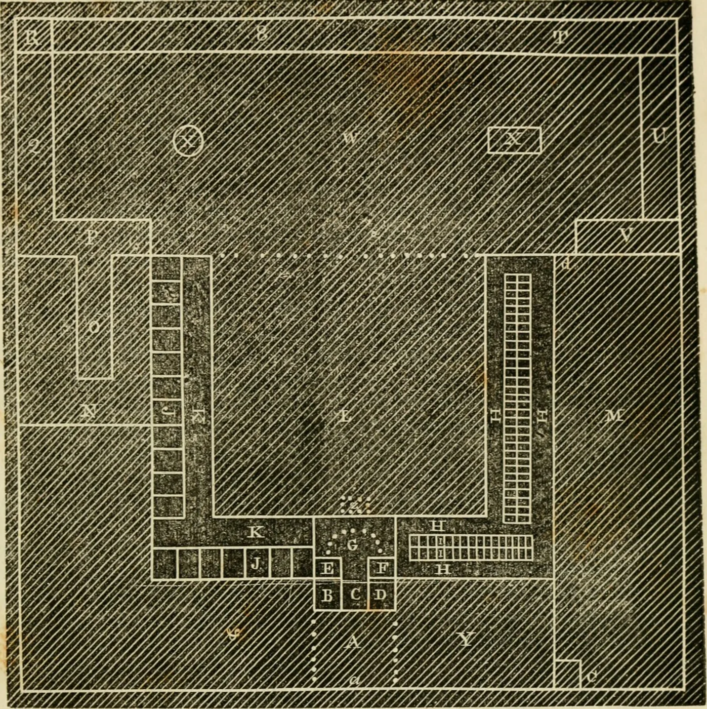
The only people a prisoner might see:
"I believe that very few men are capable of estimating the immense amount of torture and agony which this dreadful punishment, prolonged for years, inflicts upon the sufferers."
— Charles Dickens, visiting Eastern State Penitentiary, 1842From Eastern State annual reports:
Theory: Prisoners work together during the day (economically productive) but are kept in solitary at night and under absolute silence at all times.
🔍 A Day in the Life
Punishment for breaking silence:
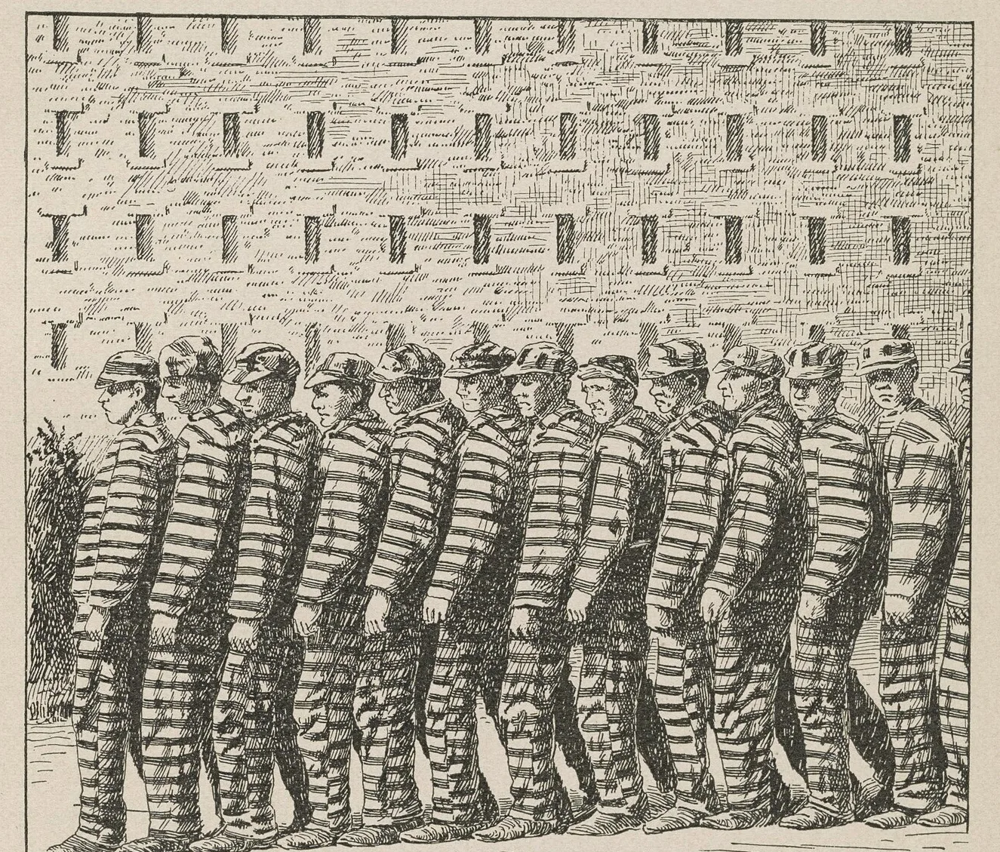
Auburn system became dominant across America — not because it was more humane, but because it was more profitable
Private companies contracted with prisons to use inmate labor. Companies provided raw materials; prisoners produced finished goods. State made profit; company got cheap labor.
Shoes, barrels, furniture, tools, clothing, chairs, brushes, carpets. Auburn Prison became a factory.
By 1830s, Auburn Prison was self-supporting. By 1840s, it was generating profit for the state.
The penitentiary created obedient subjects through trauma, not moral citizens through reflection
But reformers believed they had created a scientific solution to crime. Other states rushed to copy the model.
A few institutions existed, but they were houses of horror:
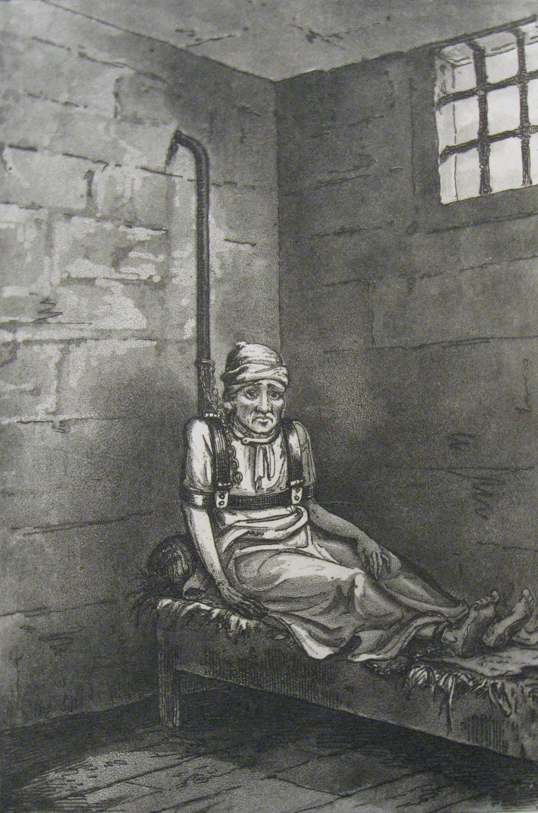
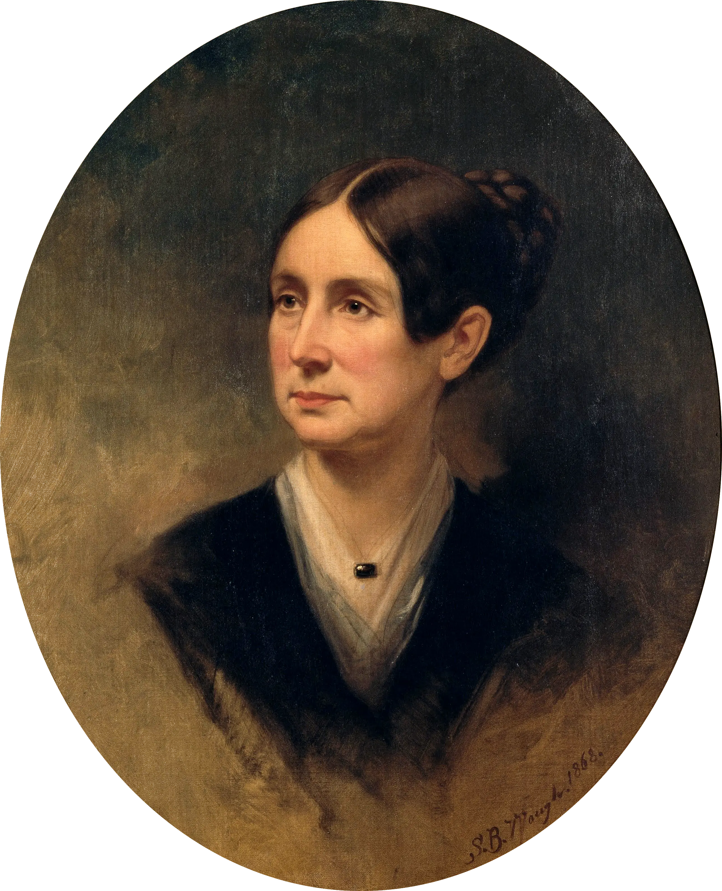
Dix found mentally ill women:
Dix was horrified. She decided to investigate every facility in Massachusetts.
Personally visited every jail, poorhouse, and asylum in Massachusetts
The mentally ill across Massachusetts:
"I proceed, gentlemen, briefly to call your attention to the present state of insane persons confined within this Commonwealth, in cages, closets, cellars, stalls, pens! Chained, naked, beaten with rods, and lashed into obedience!"
— Dorothea Dix, Memorial to the Massachusetts Legislature, January 1843Three Key Points:
Massachusetts appropriated funds to expand Worcester State Hospital (1843)
Dix didn't stop. She spent the next 40 years traveling across America, investigating conditions and lobbying state legislatures. She was directly responsible for founding or expanding 32 mental hospitals.
Revolutionary idea: Mental illness is a disease that can be cured through kindness, structure, and proper environment
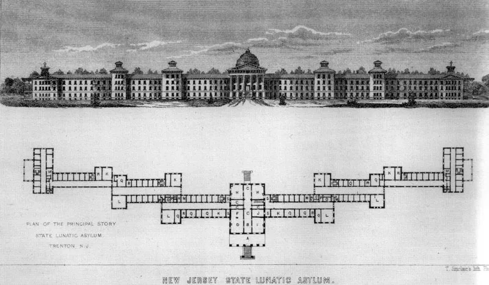
🔍 A Day in the Life
Common diagnoses in 19th-century asylums:
Beyond the lecture
Independent Study:
Common Schools and
the Shaping of Citizens
"A little learning is a dang'rous thing;
Drink deep, or taste not the Pierian spring."Alexander Pope, An Essay on Criticism (1711)
By 1820s:
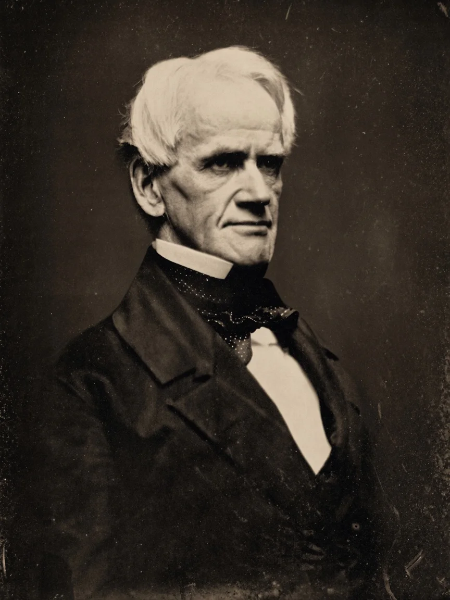
"Education, then, beyond all other devices of human origin, is the great equalizer of the conditions of men—the balance-wheel of the social machinery."
— Horace Mann, Twelfth Annual Report, 1848"Common school" = school common to all children regardless of wealth or background
Democracy requires educated voters who can read, think, and participate. Ignorant citizens cannot self-govern. Schools create informed citizenry.
Industrial economy needs literate, numerate workers. Education creates productive labor force. States with good schools would have economic advantage.
Cities filled with poor immigrants threaten stability. Education assimilates and disciplines. Schools teach obedience, punctuality, respect for authority. Prevention of crime through moral training.
Schools as institutions of character formation. Teaching Protestant values and middle-class morality. Creating virtuous citizens who internalize self-discipline.
Education as pathway to success. Poor children could rise through merit and learning. Alternative to hereditary privilege. (This was the promise, anyway.)
Schools would create orderly, productive, moral citizens who accepted their place in the social order
Convinced legislature to double state education budget. Required local districts to provide minimum funding. Built new schools across state.
Established first teacher training schools in America (1839). Created professional standards for teachers. Developed teaching methods and curriculum.
Common subjects: Reading, writing, arithmetic, grammar, geography, history. Plus moral instruction through McGuffey Readers and Bible study. Age-graded classrooms.
Created county superintendents to inspect schools. Wrote annual reports on education conditions. Published Common School Journal to spread ideas.
Pushed for longer school terms — from 3 months to 6 months minimum. Eventually toward modern school calendar.
Better buildings with ventilation, heating, lighting. Blackboards, maps, books for every school. Making school environment conducive to learning.
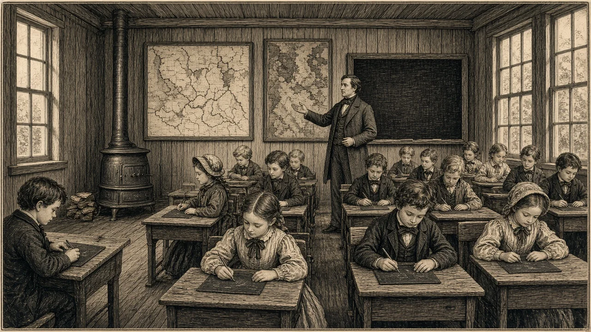
Schools taught academic subjects, but they also socialized children into middle-class values and industrial discipline
School bell at precise time. Late students punished. Preparation for factory clock discipline.
Teacher's word is law. No questioning or talking back. Training for hierarchical workplace.
Hours of enforced quiet and stillness. Bodies disciplined along with minds. Preparation for sedentary labor.
Students constantly compared and graded. Winners and losers identified. Meritocracy internalized.
Different expectations for boys and girls. Girls taught domestic virtues; boys taught leadership. Reinforcing separate spheres.
History lessons emphasizing American exceptionalism. Patriotic rituals. Assimilation of immigrants.
McGuffey Readers teaching honesty, industry, sobriety, deferred gratification. Middle-class values as universal.
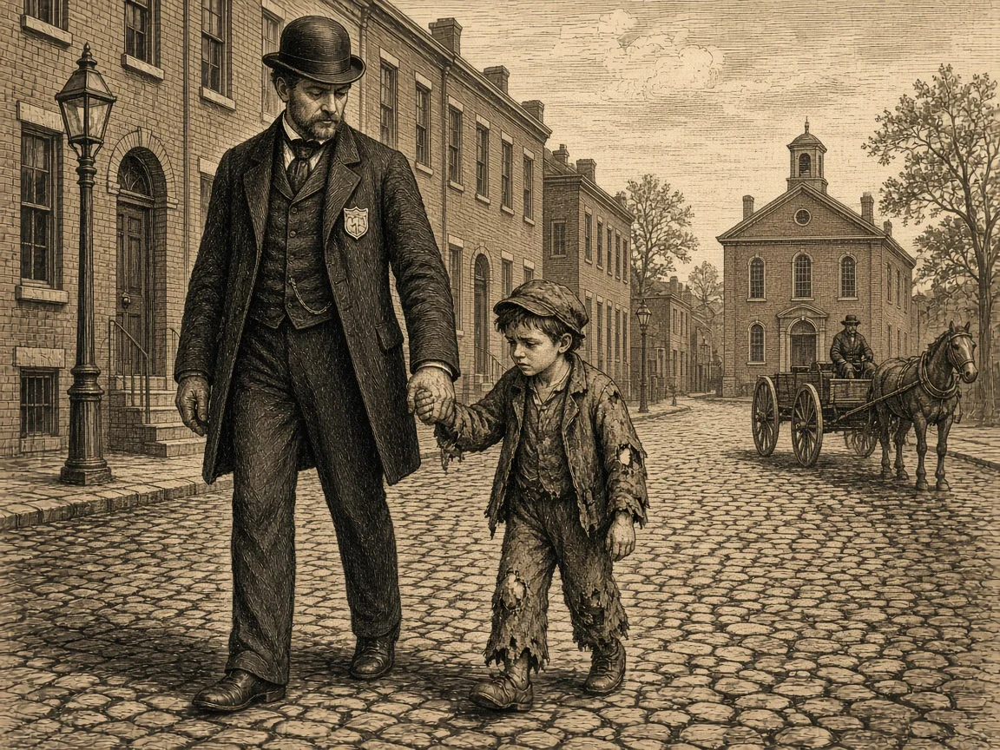
"I was taken by the truant officer and carried to school."
—Booker T. Washington, Up from Slavery (1901)
Needed children's labor income. Couldn't afford to lose their work. Resented middle-class values being imposed. Saw schools as removing children from family economy.
Catholics objected to Protestant instruction. Wanted to preserve native languages. Feared assimilation eroding cultural identity. Irish especially resistant.
Farm families needed children for seasonal labor. Long distances to schools. Preferred local control to state standardization.
Didn't want their children mixing with poor and immigrants. Continued using private schools and academies. Resented taxes for common schools.
Common schools were common—but not for everyone
Created literate, disciplined workforce
Reproduced social hierarchy
Schools did create more educated citizens—but also created more disciplined subjects
The question remains: Education for liberation or for control?
"We will make you free by controlling you. We will perfect you by confining you. We will create moral citizens by breaking your will."
— The unspoken logic of antebellum reformReal Improvements:
But Also Created:
Reformers believed the right structure could transform character. But can you engineer virtue? Or do institutions just create compliance?
Reformers claimed universal values but imposed middle-class Protestant standards. Whose morality gets institutionalized?
Were these institutions about helping people—or managing them? About liberation—or discipline? Can reform be both compassionate and coercive?
Reformers removed people from families and communities for "their own good." What is lost when problems are institutionalized?
The moral laboratory of the 1820s-1860s created modern institutions—prisons, asylums, schools—that still shape our lives today
We inherit both their compassion and their contradictions. The question remains: Can we design institutions that truly liberate rather than just control?
This is life for 5, 10, even 20 years. Many do not survive Auburn.